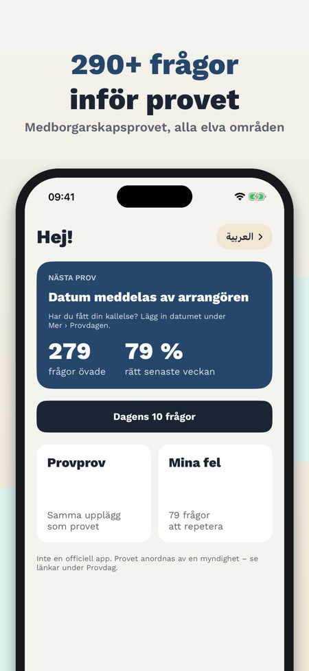
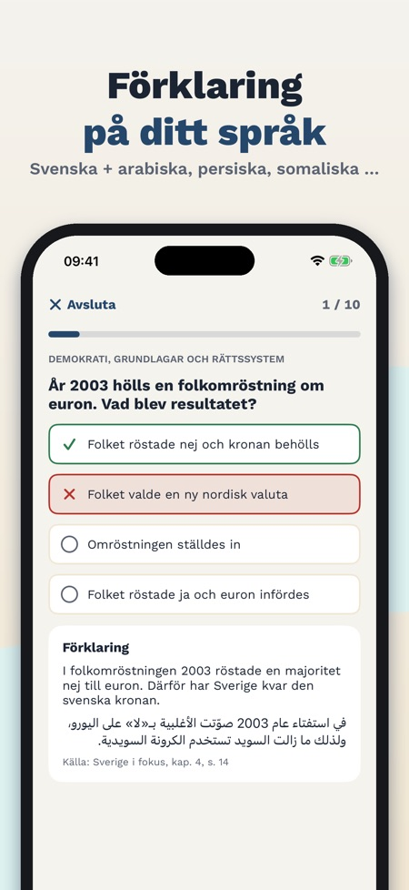
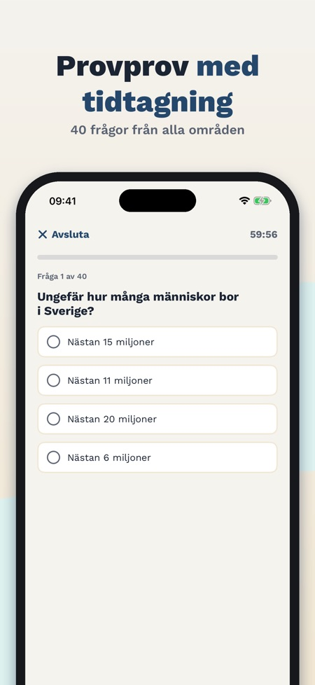

Provklar har över 290 övningsfrågor på svenska från alla elva ämnesområden. Förklaringarna finns på svenska och på ditt språk.



Alla elva områden, bland annat historia, välfärd, demokrati och grundlagar, fri- och rättigheter, medierna, geografi samt EU.
Svenska, engelska, arabiska, persiska, somaliska, tigrinja och ukrainska. Frågorna är på svenska, precis som i provet.
Provprovet har 40 frågor på 60 minuter. Antal frågor, tid och gräns i det riktiga provet är inte publicerade ännu, så provprovet har en egen övningsgräns.
Frågorna är egna och bygger på det officiella studiematerialet Sverige i fokus, med källhänvisning.
Ja, den fungerar utan internet.
Nej, det är ett engångsköp. Dagens 10 frågor och ett komplett provprov ingår utan köp.
Nej, Provklar är oberoende och har ingen koppling till Universitets- och högskolerådet, Migrationsverket eller någon annan myndighet.
Öva inför medborgarskapsprovet i samhällskunskap. Frågorna är på svenska, precis som i provet, och förklaringarna finns också på engelska, arabiska, persiska, somaliska, tigrinja och ukrainska.
ALLA ELVA ÄMNESOMRÅDEN
- Över 290 egna övningsfrågor med fyra svarsalternativ, som i provet
- Historia, traditioner, välfärd, arbetsliv och privatekonomi, klimat och miljö, demokrati och grundlagar, fri- och rättigheter, religion, mediernas roll, geografi samt EU och internationellt samarbete
- Varje fråga har en förklaring och en källhänvisning till det officiella studiematerialet
FÖRKLARINGAR PÅ DITT SPRÅK
- Frågan på svenska, förklaringen på svenska och på ditt språk
- Arabiska och persiska visas från höger till vänster
PROVPROV MED TIDTAGNING
- 40 frågor från alla områden på 60 minuter, resultatet visas först i slutet
- Resultat per område och genomgång av felen
- Antal frågor, tid och gräns i det riktiga provet är inte publicerade ännu; vårt provprov har en egen övningsgräns
MINA FEL OCH DAGENS 10 FRÅGOR
- Fel samlas och försvinner när du svarat rätt två gånger i rad
- Varje dag tio frågor, de du inte kan först
BEGREPPSKORT OCH SAMMANFATTNINGAR
- 74 begreppskort, till exempel allemansrätten, offentlighetsprincipen och kollektivavtal
- En kort sammanfattning per område
PROVDAGEN
- Från brevet till resultatet: anmälan, legitimation, vad du får ta med
- Lägg in ditt provdatum och få en påminnelse en vecka innan
ENGÅNGSKÖP, INGEN PRENUMERATION
Dagens 10 frågor och ett komplett provprov med tidtagning ingår utan köp. Full tillgång låser upp alla frågor, obegränsade provprov, begreppskort och sammanfattningar. Fungerar utan internet.
Provklar är en oberoende app och inte officiell. Den har ingen koppling till Universitets- och högskolerådet, Migrationsverket eller någon annan myndighet. Frågorna är egna och bygger på fakta i det officiella studiematerialet Sverige i fokus. Provet görs bara på svenska.